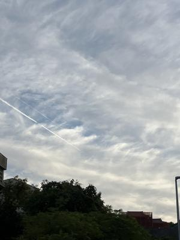
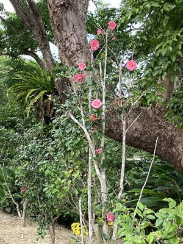
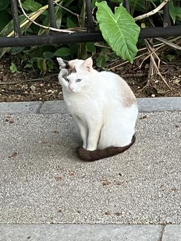

うるがいの話 ある日
最新: 師走【うるがいの話 ある日】とは 一日だけのプログです
『うるがいの話』の最新一日だけのプログで、通信料が少なく経済的だ。カニの画像をクリックすると全ての日付が載る『うるがいの話』サイトを表示します
|
|
【うるがいの話】 うるがい(ｳﾙｶﾞｲ urugai)とは、『もずくがに』の名前でとても大きくなります。 |
|---|---|
|
|
【カミマヤーの話】 猫のことを方言でマヤーといいます。カミマヤー（kamimayaa）とは、神の猫のことです。 |
|
【たながぁの音楽】 たながぁ（ﾀﾅｶﾞｰ tanagaa）とは手長えびのことで、何種類かあり大きいのは車 エビぐらいになります。 |

|
【ぶながぁの話】 ぶながぁ(ﾌﾞﾅｶﾞｰ bunagaa)とは、赤い髪の毛、赤い身体、そして身長は１ｍ２０ｃｍ ぐらい、川の蟹を食べているの目撃された。場所は沖縄県国頭郡大宜味村のと ある村僕の隣近所に住んでいる爺さんから、聞いた話です。 |
|
|
【ギーマの話】 ギーマ(giima)とは、山原の里山に咲くスズランに似た、 花を付けます。実は食べられます、 気が付くと口の周りが紫になっています。 |
2023年12月27日 (水）師走
16:40
 
昨日は精神科、今日は整形外科へお義母さんを連れていく。ヨメが付き添うん
だが、お義母さんの歩く様子が段々危なっかしい。整形外科では、歩行が困難
だから車イスと思わず、なるべく歩いてもらうようにとしつこく言われたと。
年明け、足のサポート器具の調整の日程が入る。ヨメが、薬局へ行っている間
に、昨日オジサンに会った話をする。下の歯が、一本だけになっていたのはビ
ックしたと話すと、お義母さんは殆ど抜けていない歯を私に見せた。ホーたい
したもんだ。

修理に出したソニーの液晶テレビ、修理担当から『一日中稼働したものの故障
が再現できない、もし液晶を交換すると新規購入額かそれ以上になります』と
言われる。・・・・、修理にだすときエディオンの店舗でも再現を確認したの
に？、押し問答したくないので返却してもらうことにする。アマゾンで高額の
電気製品は買わない方がいいと分かる。
１６時２０分 ビットコインの総資産 ￥１７、５９２（↓６２）